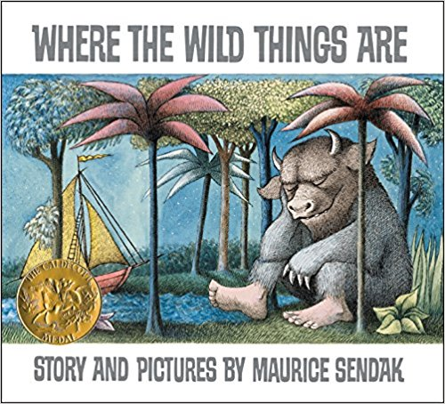
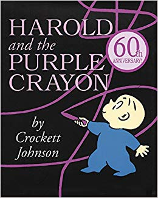
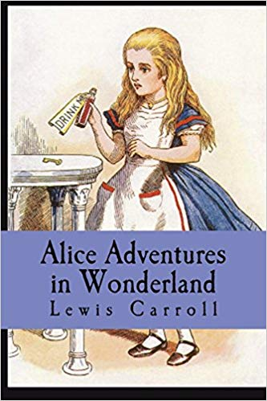
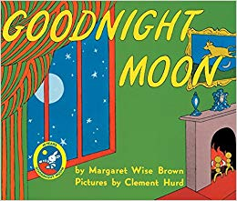
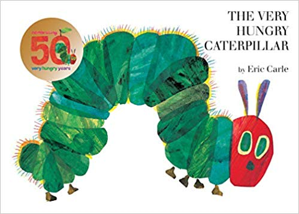
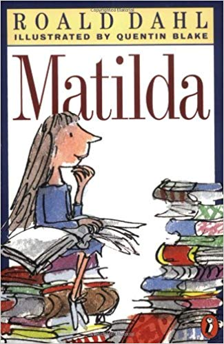
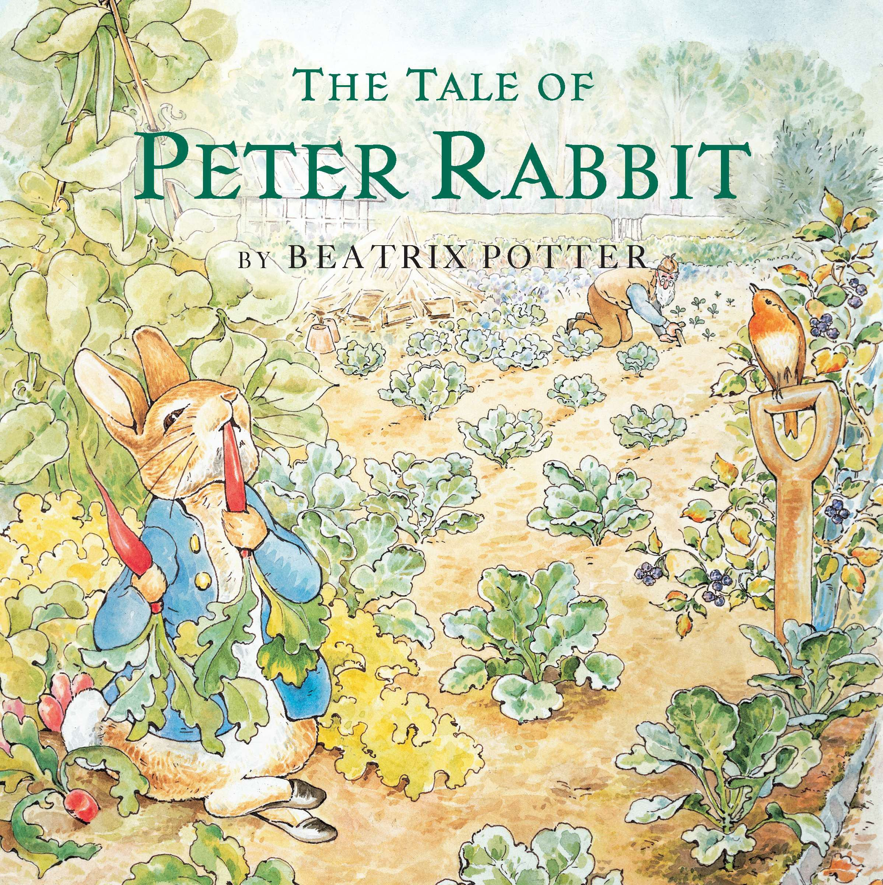
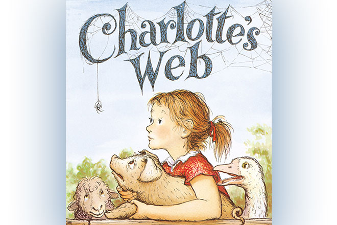
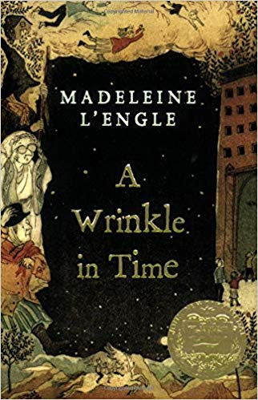
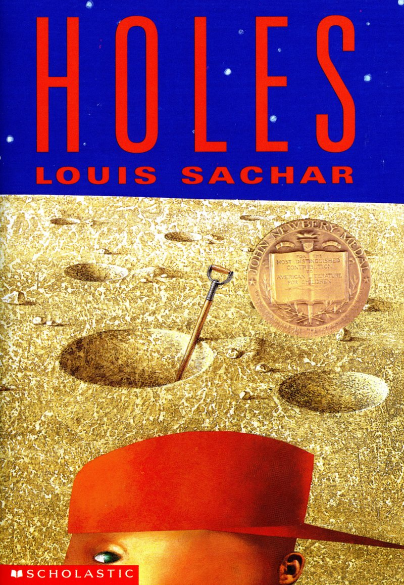

https://images-na.ssl-images-amazon.com/images/I/61ulN35aErL._SY452_BO1,204,203,200_.jpg
|
Where the Wild Things Are
Maurice Sendak
Where the Wild Things Are is fifty years old! Maurice Sendak's Caldecott Medal-winning picture book has become one of the most highly acclaimed and best-loved children's books of all time.
|
|

https://images-na.ssl-images-amazon.com/images/I/510ASFs%2BJ3L._SX258_BO1,204,203,200_.jpg
|
Harold and the Purple Crayon
Crockett Johnson
One evening Harold decides to go for a walk in the moonlight. Armed only with an oversize purple crayon, young Harold draws himself a landscape full of wonder and excitement.
|
|

https://images-na.ssl-images-amazon.com/images/I/51bDmmnouCL._SX331_BO1,204,203,200_.jpg
|
Alice's Adventures in Wonderland
Lewis Carroll
Socially awkward teen Charlie (Logan Lerman) is a wallflower, always watching life from the sidelines, until two charismatic students become his mentors. Free-spirited Sam (Emma Watson) and her stepbrother Patrick (Ezra Miller) help Charlie discover the joys of friendship, first love, music and more, while a teacher sparks Charlie's dreams of becoming a writer. However, as his new friends prepare to leave for college, Charlie's inner sadness threatens to shatter his newfound confidence.
|
|

https://images-na.ssl-images-amazon.com/images/I/61ZfoLVFjnL._SX258_BO1,204,203,200_.jpg
|
Goodnight Moon
Margaret Wise Brown
Goodnight Moon is an American children's book written by Margaret Wise Brown and illustrated by Clement Hurd. It was published on September 3, 1947, and is a highly acclaimed bedtime story.
|
|

https://images-na.ssl-images-amazon.com/images/I/41I%2BObE%2BG3L._SY355_BO1,204,203,200_.jpg
|
The Very Hungry Caterpillar
Eric Carle
The very hungry caterpillar literally eats his way through the pages of the book-and right into your child's heart...
|
|

https://images-na.ssl-images-amazon.com/images/I/51zEIXVobbL._SX323_BO1,204,203,200_.jpg
|
Matilda
Roald Dahl
Matilda is a sweet, exceptional young girl, but her parents think she's just a nuisance. She expects school to be different but there she has to face Miss Trunchbull, a kid-hating terror of a headmistress.
|
|

https://images-na.ssl-images-amazon.com/images/I/A1KzHvAir%2BL.jpg
|
The Tale of Peter Rabbit
Beatrix Potter
The Tale of Peter Rabbit is the original classic by Beatrix Potter. The Tale of Peter Rabbit was first published by Frederick Warne in 1902 and endures as Beatrix Potter's most popular and well-loved tale. It tells the story of a very mischievous rabbit and the trouble he encounters in Mr McGregor's vegetable garden!
|
|

https://artsednow.org/wp-content/uploads/2018/11/CharlottesWeb.jpg
|
Charlotte's Web
E. B. White
E. B. White's Newbery Honor Book is a tender novel of friendship, love, life, and death that will continue to be enjoyed by generations to come. It contains illustrations by Garth Williams, the acclaimed illustrator of E. B. White's Stuart Little and Laura Ingalls Wilder's Little House series, among many other books.
|
|

https://images-na.ssl-images-amazon.com/images/I/510-sv2qzFL._SX320_BO1,204,203,200_.jpg
|
A Wrinkle in Time
Madeleine L'Engle
It was a dark and stormy night; Meg Murry, her small brother Charles Wallace, and her mother had come down to the kitchen for a midnight snack when they were upset by the arrival of a most disturbing stranger.
|
|

https://www.scholastic.com/content5/media/products/03/9780440414803_mres.jpg
|
Holes
Louis Sachar
Stanley Yelnats is under a curse. A curse that began with his no-good-dirty-rotten-pig-stealing-great-great-grandfather and has since followed generations of Yelnatses. Now Stanley has been unjustly sent to a boys' detention center, Camp Green Lake, where the boys build character by spending all day, every day digging holes exactly five feet wide and five feet deep. There is no lake at Camp Green Lake. But there are an awful lot of holes.
|
|